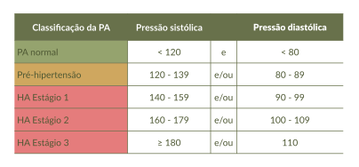

Para confirmar o diagnóstico de HAS, é necessário que, durante a verificação, a pressão se apresente elevada em pelo menos duas oportunidades em dias diferentes. O diagnóstico de HAS em adultos é feito conforme a classificação presente na Tabela 1.
Tabela 1. Classificação da pressão arterial de acordo com a medição no consultório a partir de 18 anos de idade

Fonte: Diretriz Brasileira de Hipertensão Arterial – 2025 (Brandão et al., 2025.)